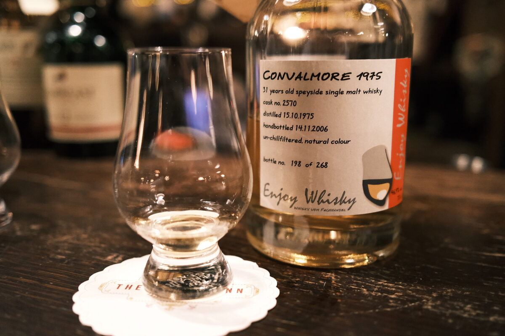

Convalmore 1975 Enjoy Whisky 31 years 46.9% (probably exbourbon)
Sort of a lame label, but I suppose they didn’t care much back in the day. That’s 2006, for the record. Closed distillery.
Colour Light gold.
Nose Wax and orchard fruits. Minty, herbal. Stewed fruits and apple Danishes. Lightly spiced. Smells old, for sure. With water, orange peels, pain aux raisins, candles, malt.
Palate Sweet apples and pears. A heap of wax, a drop of olive oil. Malty as anything, a herbal breeze, minty. Lightly sweet pastries, perhaps a canelé or madeleine. Milky mouthfeel. Oak spices, cinnamon and cloves. With water, light liquorice, jellies. Malt again. A bit resinous? Fresh timber?
Finish Cream, jam and scones. Fennel, cinnamon. Mulled cider… lemons and apple juice. Long, warming. With water, a little more fennel, malt. Lacquer?
Comments There’s something hard to replicate with old malts. Waxy, fruity, malty, good old stuff. 90/100.

Posted by Dominic on 15 Jun 2021